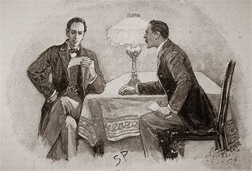

Welcome to the Holmesite!
Here, you'll be able to read "The Adventures of Sherlock Holmes" in its entirety - for free!
This was the second book which featured Sherlock Holmes and Dr. Watson, and takes place sometime after The Sign of the Four. Its sucessor was the unforgettable "Memoirs of Sherlock Holmes", in which Professor Moriarty makes his first appearence.